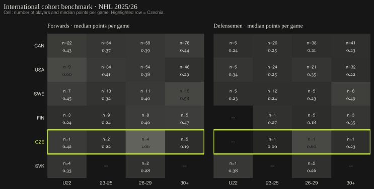
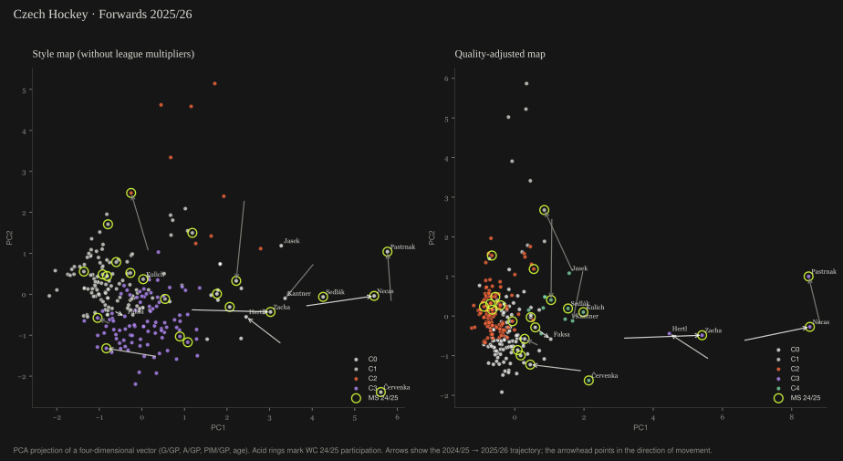
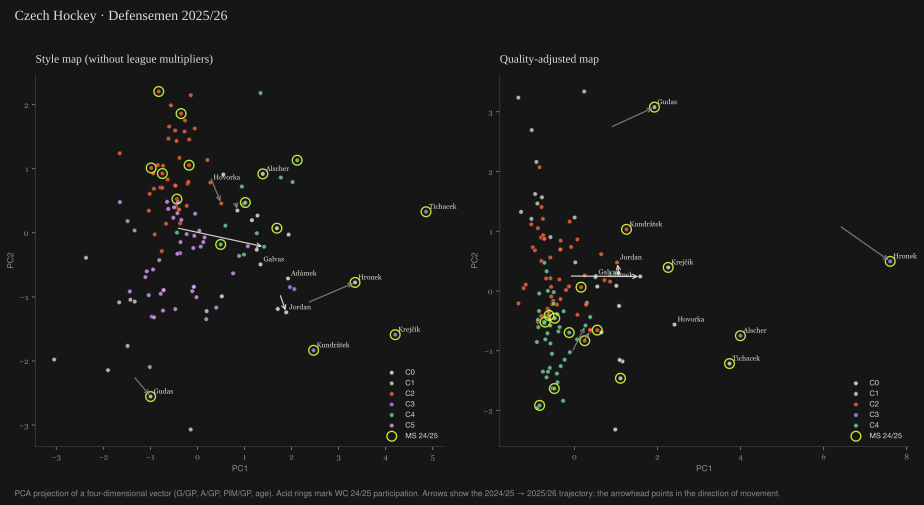

Metodologický nástroj pro průběžné mapování hráčů v profesionálních ligách
Mapa cca 280 Čechy hokejistů ve světových profesionálních ligách (NHL, Liiga, Tipsport Extraliga), segmentovaná podle pozice a herního profilu. Metodologický nástroj pro průběžné mapování fondu hráčů v rámci víceletého reprezentačního cyklu — ne výběrové doporučení.
Hokejová intuice český fond rozpoznává hráč po hráči. Strukturální pozice v rámci peer-zemí (FIN, SWE, SVK, CAN) ale vyžaduje datovou agregaci kterou jedinec v hlavě nedokáže. Níže tři čísla, která nejsou typicky agregovaná v jednom místě.
| Země | NHL hráči (≥10 GP) | Populace (M) | Hráčů / M |
|---|---|---|---|
| CAN | 323 | 40.1 | 8.05 |
| SWE | 76 | 10.6 | 7.17 |
| FIN | 34 | 5.6 | 6.07 |
| SVK | 9 | 5.4 | 1.67 |
| CZE | 15 | 10.9 | 1.38 |
| USA | 225 | 335.0 | 0.67 |
Po normalizaci na populaci je český fond v NHL šestý ze šesti porovnávaných zemí — za Slovenskem, čtyřikrát méně hustý než Finsko.

Útočníci — kde český pool je strukturálně tenký:
| Cohort | ČR | FIN | SWE | SVK |
|---|---|---|---|---|
| U22 | n=1 · 0.42 | n=3 · 0.24 | n=7 · 0.45 | n=4 · 0.33 |
| 23-25 | n=2 · 0.22 | n=9 · 0.24 | n=13 · 0.32 | — |
| 26-29 | n=4 · 1.06 | n=8 · 0.46 | n=11 · 0.40 | n=2 · 0.28 |
| 30+ | n=5 · 0.19 | n=5 · 0.47 | n=15 · 0.58 | — |
Český U22 forwards cohort = 1 hráč (Kulich). FIN 3, SWE 7. Současný 26-29 elite cohort (Pastrňák/Nečas/Zacha/Hertl) drží median 1.06 P/GP — světová špička, ale jen 4 hráče hluboko.
Obránci — strukturálně problematická pozice napříč všemi cohorty:
| Cohort | ČR | FIN | SWE | SVK |
|---|---|---|---|---|
| U22 | — | — | n=5 · 0.23 | n=1 · 0.38 |
| 23-25 | n=1 · 0.00 | n=1 · 0.27 | n=12 · 0.24 | — |
| 26-29 | n=1 · 0.60 | n=5 · 0.18 | n=5 · 0.23 | n=2 · 0.26 |
| 30+ | n=1 · 0.23 | n=3 · 0.35 | n=8 · 0.49 | — |
ČR má 4 obránce v NHL celkem napříč všemi věkovými skupinami. Pro srovnání FIN má 14, SWE 30. U22 cohort: 0 českých obránců.

42 z 81 hráčů, kteří odehráli MS 2024 nebo MS 2025 za reprezentaci, se nachází v mapovaném poolu. Mezi nimi top NHL hráči (Pastrňák, Nečas, Vejmelka) i Extraliga veteráni (Červenka, Sedlák, Kundrátek). Strukturálně tedy reprezentační pool není „NHL kontingent“ ani „Extraliga kontingent“ — je to spojnice obou profesionálních ekosystémů.
Po aplikaci ligových násobiček se NHL elita (Pastrňák PC1 ≈ 8.5) dramaticky odpoutává od EU elity (Červenka PC1 ≈ 2). Style mapa (bez násobiček) ukazuje samotný herní profil — Pastrňák a Červenka tam leží v podobné zóně produkce. Dvojice projekcí umožňuje interpretovat fond jak stylově, tak kvalitativně, bez nutnosti volit jednu narativu.
Z 16 hráčů, kteří splňují minimum 30 zápasů v obou sezónách, vykazují stabilní top-tier produkci NHL hvězdy (Pastrňák Δ ≈ 0). Mezi zlepšujícími se: Zacha a Nečas (oba NHL, breakout / post-trade). Mezi klesajícími: Hertl a Palát. Tato čísla nejsou predikce; popisují směr pohybu mezi sezónami.
Vysoká produkce gólů + asistencí, NHL stars (Pastrňák, Hertl, Zacha, Nečas) + EU elita (Mazura). Mediánový ročník 1996.
Top příklady: David Pastrnak, Martin Necas, Pavel Zacha, Tomas Hertl, Roman Červenka
Nízká produkce, mediánový ročník 2001. Většinou Extraliga (112/122). Junior callupy a mladí depth hráči.
Top příklady: Jiri Kulich, Tomas Mazura, Filip Chytil, Ondrej Kos, Jakub Frolo *
Výrazně vysoké PIM (5-6× cohort medián). Velcí hráči — Klapka (NHL prospect), Zohorna, Lakatoš. Středně-vyšší věk.
Top příklady: Adam Klapka, Libor Hudáček, Dominik Lakatoš, Matúš Sukeľ, Ondrej Pavel
Mediánový ročník 1994, nižší produkce než C0. Mix NHL veteránů (Palát, Faksa, Nosek, Kampf) a Extraliga regulars.
Top příklady: Radek Faksa, Tomas Nosek, Ondrej Palat, David Kampf, David Kaše
| Hráč | Liga | GP 24 / 25 | Δ |
|---|---|---|---|
| Pavel Zacha | nhl | 82 / 78 | +0.229 |
| Martin Necas | nhl | 79 / 78 | +0.204 |
| Radek Faksa | nhl | 70 / 58 | +0.070 |
| Hráč | Liga | GP 24 / 25 | Δ |
|---|---|---|---|
| Ondrej Palat | nhl | 77 / 80 | -0.156 |
| Tomas Hertl | nhl | 73 / 82 | -0.109 |
Pro detailní metodologii a tabulky pokračujte k sekci níže.
| Liga | Násobička |
|---|---|
| nhl | 1.00 |
| ahl | 0.55 |
| shl | 0.45 |
| liiga | 0.42 |
| nl | 0.40 |
| extraliga | 0.35 |
| cz1l | 0.20 |
Subjektivní aproximace inspirované public konverzemi production rates hráčů, kteří přešli mezi ligami (hockeyviz.com, Sznajder NHL-equivalency analyses). Citlivostní analýza níže ukazuje robustnost vůči ±20 %.
Per-game produkce hráčů s malým vzorkem (GP < 10) je shrinkutována k mediánu své ligy pomocí empirical Bayes formule:
shrunk_rate = (počet_eventů + K × cohort_medián) / (player_GP + K), K = 10
Při GP = 1 dominuje cohort medián (~91 %); při GP = 80 dominují skutečná data (~89 %). Bez shrinkage by hráč jako Lantoši (4 GP, 5 bodů, 1.25 P/GP raw) předběhl Pastrňáka v kvalitě. Po shrinkage spadne na 0.59 P/GP — methodologicky obhajitelné.
| Pozice | Projekce | PC | % variance | G/GP | A/GP | PIM/GP | věk |
|---|---|---|---|---|---|---|---|
| D | quality | PC1 | 41.4% | 0.706 | 0.702 | -0.064 | 0.067 |
| D | quality | PC2 | 27.1% | 0.019 | 0.113 | 0.714 | -0.691 |
| D | style | PC1 | 35.8% | 0.666 | 0.643 | -0.376 | 0.041 |
| D | style | PC2 | 26.5% | -0.120 | -0.226 | -0.509 | 0.822 |
| F | quality | PC1 | 46.2% | 0.699 | 0.703 | 0.083 | -0.103 |
| F | quality | PC2 | 25.0% | -0.069 | 0.024 | 0.904 | 0.422 |
| F | style | PC1 | 42.6% | 0.658 | 0.673 | 0.226 | -0.250 |
| F | style | PC2 | 25.3% | -0.128 | 0.093 | 0.774 | 0.613 |
Pro každý scénář perturbace násobičky byl přepočítán quality ranking a změřena změna oproti baseline. Top-10 ranking je vůči těmto změnám stabilní — žádný scénář nezpůsobuje churn větší než 1 hráč. NHL top elita (Pastrňák, Nečas, Zacha, Hertl) zůstává v top čtyřce ve všech scénářích.
| Scénář | Popis | Top-10 overlap | Top-10 churn | Mean Δ rank (top 20) |
|---|---|---|---|---|
| baseline | current multipliers from config | 10 / 10 | 0 | 0.00 |
| liiga_minus20 | liiga multiplier −20% | 9 / 10 | 1 | 4.35 |
| liiga_plus20 | liiga multiplier +20% | 9 / 10 | 1 | 1.90 |
| extraliga_minus20 | extraliga multiplier −20% | 9 / 10 | 1 | 1.30 |
| extraliga_plus20 | extraliga multiplier +20% | 10 / 10 | 0 | 2.50 |
| all_minus20 | every league multiplier −20% | 10 / 10 | 0 | 0.00 |
| all_plus20 | every league multiplier +20% | 10 / 10 | 0 | 0.00 |

Vyšší A/GP (0.29), playmaking z modré. Hronek (NHL), Jordan (Liiga), Alscher, Kaňák.
Top: Filip Hronek, Marek Alscher, Michal Jordan, Marian Adámek, Jakub Galvas
Gudas (NHL), Pláněk, Šenkeřík. Nízká produkce, vyšší PIM. Pivot defenzivního stylu.
Top: Radko Gudas, Petr Šenkeřík, Tomáš Dvořák, Janis Jaks, Tomáš Bartejs
Mediánový ročník 2001, mostly Extraliga. Jiříček (NHL prospect), Hovorka, Trejbal, Hájek.
Top: Mikulas Hovorka, Ondrej Trejbal, Rayen Petrovický, Filip Král, David Moravec
Tichaček, Kundrátek, Krejčík. Vyšší A (0.29), starší (1992). Šedovlasí playmakeři z modré.
Top: Jiri Tichacek, Jakub Krejčík, Tomáš Kundrátek, Radim Šimek, David Škůrek
Vyrovnaný profil, mediánový ročník 2000.
Top: Radek Kucerik, Tomáš Cibulka, Miguël Tourigny, Samuel Huzevka *, Libor Zábranský
Šestá kategorie — typicky velmi mladí nebo strongly defensive.
Top: Filip Pavlík, Adam Polášek, Adam Jánošík, Patrik Demel, Alex Rašner
Veřejná versus interní data. Tato analýza využívá výhradně veřejně dostupné statistické zdroje (NHL API, MoneyPuck, Liiga, hokej.cz, Wikipedia pro IIHF turnaje). Trénerský a manažerský úsek reprezentace ČR disponuje interními daty (videosrážka, kondiční sledování, scoutingové zprávy, mikrostatistiky vstupů do pásma a kontrolovaných výjezdů), které tato metoda nezohledňuje. Vzory zde identifikované jsou hypotézami pro vnitřní validaci, nikoli závěry.
Liga quality multipliers. Použité násobičky kvality lig (NHL = 1.00, AHL = 0.55, SHL = 0.45, Liiga = 0.42, NL = 0.40, Extraliga = 0.35, 1. liga = 0.20) jsou subjektivní aproximace. Vycházejí z veřejných srovnání produkce hráčů, kteří přešli mezi ligami, ale jsou citlivé na výběr hráčů, vlastnosti pravidel, velikost kluziště a sezónní kontext. Citlivostní analýza (oddíl Methodologie) ukazuje, jak se mapa mění při změně násobičky o ±20 % — top-10 ranking je vůči těmto perturbacím stabilní (churn 0-1 hráčů).
Žádná data z KHL. KHL je z analýzy vyloučena ze dvou důvodů: politické sankce omezují použitelnost ruských statistických zdrojů, a kvalita dat byla v poslední době neověřitelná. Čeští hráči v KHL nejsou v této verzi mapy zachyceni.
Velikost vzorku a Bayesovský shrinkage. Někteří hráči mají odehráno méně než 10 zápasů v sezoně 2025/26. Per-game metriky pro tyto hráče byly shrinkutovány k mediánu své ligy (Empirical Bayes, K = 10 fantomových zápasů). Trajektoriální analýza vyžaduje minimum 30 zápasů v obou sezónách (16 hráčů splňuje).
Goaltending. Brankáři jsou vyloučeni z hlavní mapy, protože jejich pozičně specifické metriky neumožňují společnou projekci s útočníky a obránci. Brankářská analytika je extrémně kontext-závislá (kvalita obrany před brankářem, ledové podmínky, schéma hry) a tato analýza nenárokuje hloubku v této oblasti.
Chybějící zdroje. SHL a švýcarská NL jsou v této verzi mapy vyloučeny — oba weby jsou JavaScript-rendered s netriviálním přístupem k datům. Český pool v těchto ligách (~10-20 hráčů) tedy v této verzi mapy chybí. AHL hráči, NCAA, juniorské ligy mimo Extraligu a Liigy jsou rovněž mimo scope.
Style ≠ tactical understanding. Statistický otisk hráče nezachycuje schopnost číst hru, leadership, šatnové vlivy, ani specifické dovednosti pro mezinárodní turnaje (např. hru na velkém ledě po dlouhé NHL sezóně). To je doménou trenérů a scoutingu.
Žádné doporučení. Tato analýza identifikuje statistická seskupení a změny v čase. Výběr hráčů a strategická rozhodnutí vyžadují integraci s interní expertízou, kterou tato metoda nemá k dispozici. Cílem je nabídnout metodu, kterou interní tým může aplikovat na vlastní rozšířenou datovou základnu.
Plná pipeline je veřejná: github.com/barborasandova/czehockey-player-pool-atlas.
MIT licence. Spustit lze přes make install && make install-browsers && make all.
Random seed = 42 pro všechny stochastické operace (KMeans, UMAP).